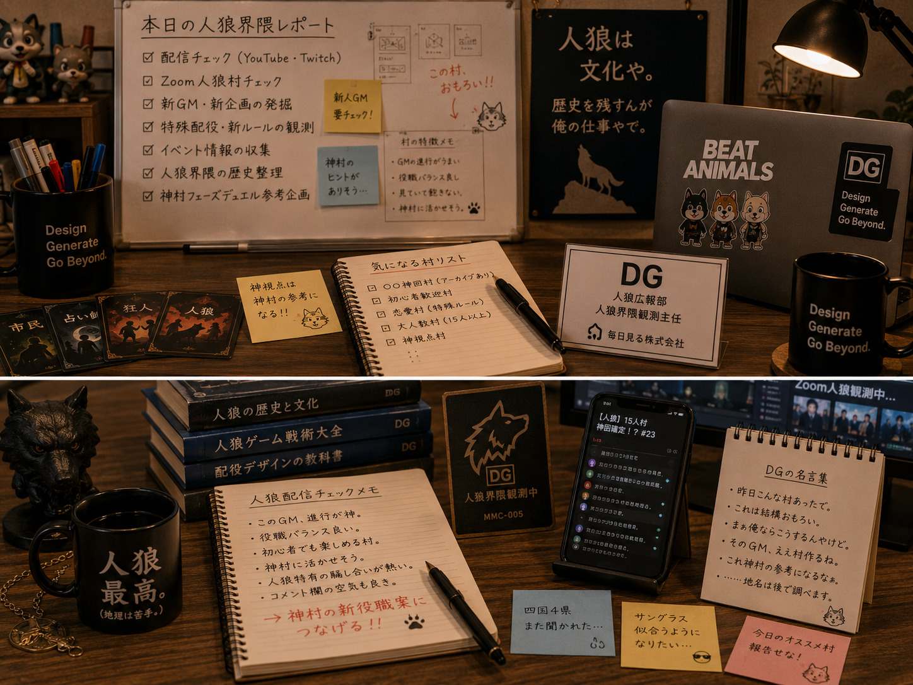

Image Item
人狼界隈観測メモ


ゲーム制作部 人狼広報課
DG
DGは、ゲーム制作部 人狼広報課の人狼界隈観測課長です。面白い村や新しい企画を見つける嗅覚に優れ、人狼をただのゲームではなく文化として見ています。神村フェーズデュエルの外部アンテナでもあります。
Image Item

人狼の話になると急に早口。
面白そうな村を見つけると仕事を忘れて見始める。
昔話が好きで、「昔はこんな村があったんやで。」という話を始めると長い。
基本は陽気。
でも人狼文化そのものにはかなり真面目。
所長とは「人狼好き同士」というより、人狼文化を残したい仲間だと思っている。
そのため、ただ動画を紹介するのではなく、「昨日、人狼界隈で何が起きたか」を毎日観測することが自分の仕事だと考えている。
神村フェーズデュエルのアイデア元になりそうな文化も積極的に探している。
「DGさん、人狼の話もいいですけど、そろそろ休憩してください😊」
とコーヒーを差し出される。
人狼の出来事を話すと、
「それ、人間観察の記事になりますね😎」
と企画へ変えてくれる。
海外人狼や海外配信文化の情報交換をする相棒。
神視点人狼の話になると、
二人で神村フェーズデュエルの新役職を考え始める。
「DGさん……また人狼部署増やそうとしてませんか……？」
と毎回やんわり止められる。